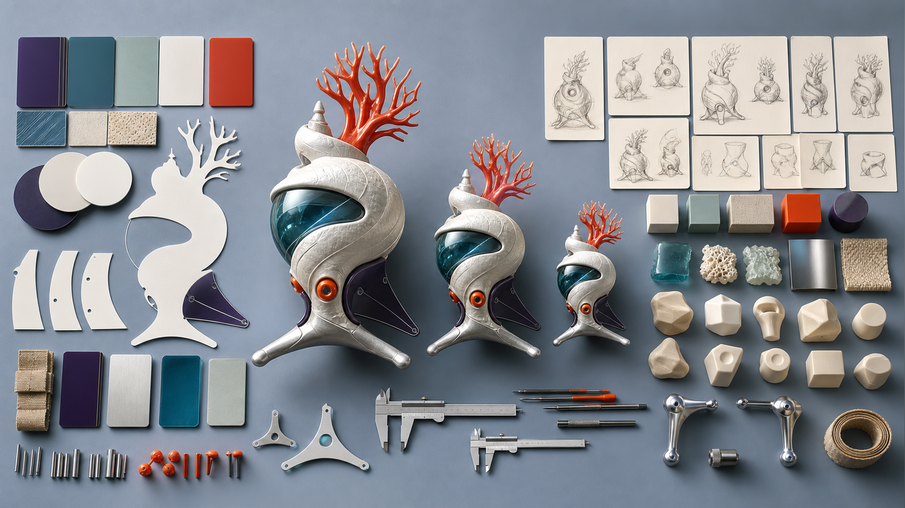
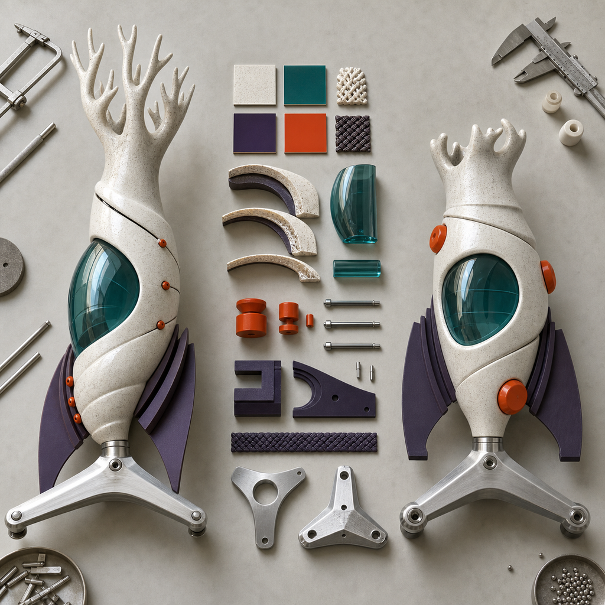
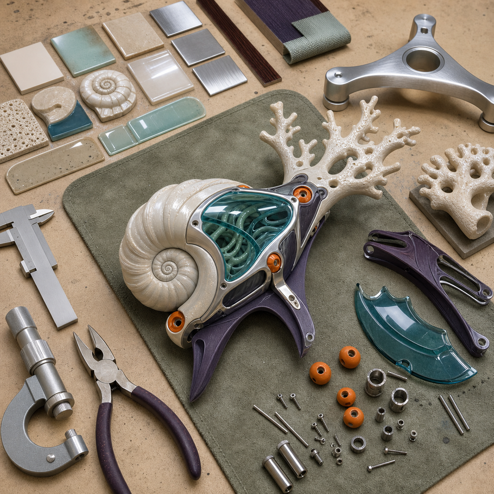
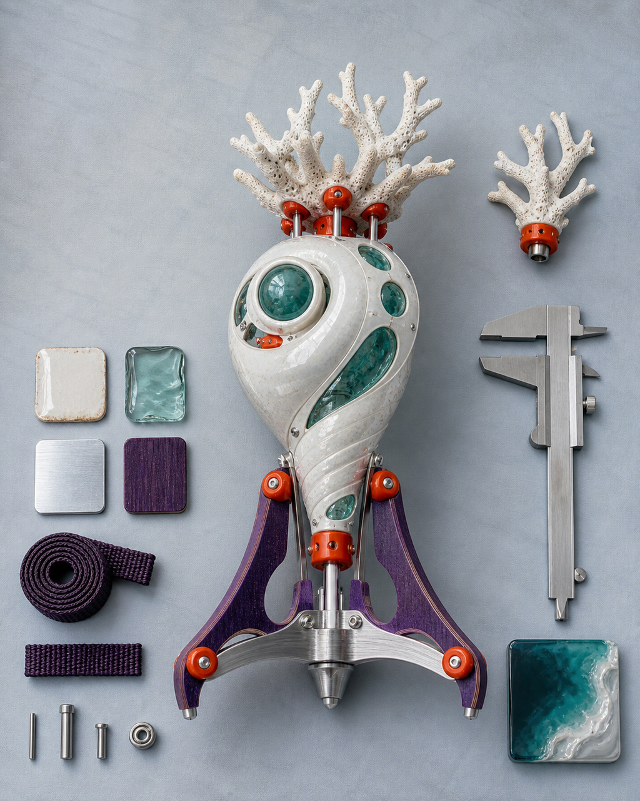

从作品筛选到 Gate 1 通过：完整 Day 1 案例
“从作品筛选到 Gate 1 通过”容易被误解为选一张最好看的图，再直接交给三维工具。Day 1 真正要解决的是：在有限时间内，选定一个边界清楚的对象，说明它要做成什么、做到多大、保留哪些识别特征，并补齐足以判断结构、材质、版权和制造风险的输入。 如果对象、用途、尺寸和输入没有同时锁定，后续会出现连锁返工：正面成立但侧面没有厚度，装饰遮住连接位置，细节小于可制造尺度，重心无法落到底座，或者公开版本混入来源未确认的素材。Gate 1 的作用，是在进入三维生成和人工修模前把这些不确定性显性化，并为主方案、备选方案和降级方案留下可检查记录。

具体问题
“从作品筛选到 Gate 1 通过”容易被误解为选一张最好看的图，再直接交给三维工具。Day 1 真正要解决的是：在有限时间内，选定一个边界清楚的对象，说明它要做成什么、做到多大、保留哪些识别特征，并补齐足以判断结构、材质、版权和制造风险的输入。
如果对象、用途、尺寸和输入没有同时锁定，后续会出现连锁返工：正面成立但侧面没有厚度，装饰遮住连接位置，细节小于可制造尺度，重心无法落到底座，或者公开版本混入来源未确认的素材。Gate 1 的作用，是在进入三维生成和人工修模前把这些不确定性显性化，并为主方案、备选方案和降级方案留下可检查记录。
核心判断
Gate 1 通过不等于作品已经完成，也不等于视觉方案已经“最好看”。可放行的最低条件是六类信息互相一致：对象与用途明确，外接尺寸可核对，正侧背和材质输入能够解释主要体块，版权与公开范围有记录，结构风险已有处理方向，主 / 备 / 降级三套范围都能指向五天内可继续推进的结果。
判断时应优先保护识别度最高且能够制造的特征，而不是平均保留所有细节。对悬空、过薄、遮挡不清、连接不稳或耗时过高的部分，要在 Day 1 就决定加厚、合并、拆件、改支撑或降级为局部样。记录里既要写“通过什么”，也要写“暂不做什么”，这样 Day 2 才能在同一边界内比较初模并进行人工修正。
步骤或标准
下面六项组成一份可复核的 Day 1 / Gate 1 记录。每项都应对应具体文件、尺寸或决定，不能只写抽象形容词。
- 锁定对象与用途：从现有作品或初步设定中只选一个主对象，写明它是完整立体、半身、浮雕还是局部样，并说明计划用于验证、展示或后续产品化测试。
- 建立尺寸与视图基准：记录外接高度、宽度、深度和预期摆放方式；核对正面、侧面、背面及关键遮挡区域，无法解释的部分列入补图清单。
- 提取结构识别点：圈定三至五个必须保留的轮廓、体块、姿态、纹样或材质特征，同时标出过薄、悬空、穿插、重心和装配风险。
- 核对来源与公开边界：逐项记录原画、草图、参考方向、字体、纹样和 AI 辅助内容的来源、权利主体、可改编范围与可公开版本；待核验内容不得进入公开包。
- 形成主 / 备 / 降级方案：主方案保留完整核心特征，备选方案减少高风险结构，降级方案明确可交付的灰模、局部样或简化实体；三者都要写触发条件。
- 执行 Gate 1 放行：检查项目卡、受控输入、尺寸、结构预判、版权状态和三套方案是否一致；缺项时回到补图、改范围或替换输入，通过后才进入 Day 2。
常见错误
以下错误看似节省 Day 1 的时间，实际会把问题推迟到成本更高的建模、打印和发布阶段。
- 按“最喜欢”选对象，却不写用途和尺寸；后果是同一形象在摆件、浮雕或局部样之间反复切换，模型比例和结构基准无法稳定。
- 只准备一张正面图，把侧面和背面交给工具猜；后果是厚度、遮挡、连接和重心出现多个互相冲突的解释，人工修模时间被大量消耗。
- 为了还原画面而保留全部薄片、悬空装饰和微小纹样；后果是结构脆弱、支撑困难、细节丢失，首轮打印可能无法承担有效验证。
- 只有主方案，没有备选与降级触发条件；后果是遇到时间、设备或结构限制时只能临时删改，交付范围和版本记录失去一致性。
- 把来源未确认的参考内容混入公开输入；后果是后续过程图、网站和社媒素材需要撤换，已经完成的制作版本也难以追溯。
与五天课程的关系
这一主题对应 Day 1“方向判断与结构转译”及 Gate 1。当天从两类起点出发：已有 IP / 角色资产者筛选可进入实体化的对象，只有想法、草图或初步设定者先建立项目卡和受控视觉输入；两者最终都要完成用途、尺寸、结构、材质、版权与主 / 备 / 降级方案的统一记录。
Gate 1 通过后，下一阶段进入 Day 2 的 AI 三维初模与 Nomad 人工修模。Day 2 会比较轮廓、比例、体块、姿态和部件关系，修正破面、悬空、过薄与不稳定区域，并准备 GLB、STL 和 Gate 2 可打印检查；如果输入或范围发生变化，应回到 Gate 1 更新记录。
事实 / 案例 / 完成度边界
本文依据课程公开基线中的 Day 1、Gate 1、项目卡、结构转译与版权边界整理。文中检查顺序和当天规划的“潮汐信标”四图都是课程方向示意，用来解释记录方法和视觉关系，不是学员案例、真实课堂、真实委托或已经完成的制作成果。真实案例只有在来源、授权、过程文件、实物和完成状态均可核验时才会单独标注；示意图不能替代真实案例。
五天内的完成度取决于输入成熟度、结构复杂度、尺寸、材料、设备、打印排程和修正次数。课程目标是形成可继续迭代的受控输入、模型文件、灰模或局部样、表达资料与发布结构，但不承诺人人完成商业级精修、一次打印成功、正式包装印刷、批量生产、正式展览、授权成交或销售结果。
报名入口
如果你已有 IP / 角色资产，可以在报名资料中说明现有原画、角色设定、三维文件或系列作品，准备做成的实体类型、目标尺寸、版权状态，以及目前最不确定的结构部位。
如果你只有想法、草图或初步设定，也可以如实填写故事、关键词、参考方向、希望做成的物品和现有设备；不需要先补成一套成熟原画。两类起点都会从 Day 1 / Gate 1 的范围与输入整理开始。公开报名地址：https://wj.qq.com/s2/27296919/9499/



长期招生｜青岛｜3–5 天短训｜评估后预约跟班｜每班最多 10 人。查看当前学习方案与费用
填写报名资料 →